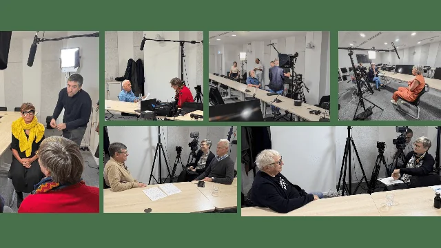

Inria · Oct. 2023 – nov. 2025
Archives orales d’Inria
Un fil narratif, des intervenants et un prestataire réunis autour d’une série patrimoniale.
Étude de cas
Contexte & objectif
Constituer une série patrimoniale qui transmette l’histoire de l’institut. Définir un fil narratif cohérent tout en coordonnant les personnes interviewées, les directions internes et le prestataire.
Mon rôle
Copilotage éditorial et coordination du prestataire audiovisuel. Inria · Oct. 2023 – nov. 2025.
Mes actions
- Contribuer au cadrage éditorial et au fil narratif des entretiens.
- Coordonner les plannings des intervenants, des directions et des équipes techniques.
- Suivre le prestataire audiovisuel, les validations et la livraison.
Livrables & attribution
Une série d’entretiens filmés et un dispositif de coordination, du cadrage à la livraison. La réalisation audiovisuelle est collective : je présente ici mon rôle de copilotage, et non une réalisation vidéo en solo.
Résultats & périmètre
Projet copiloté du cadrage à la livraison. Les 30 000 € correspondent au budget du projet audiovisuel dans son ensemble, pas à une contribution individuelle.